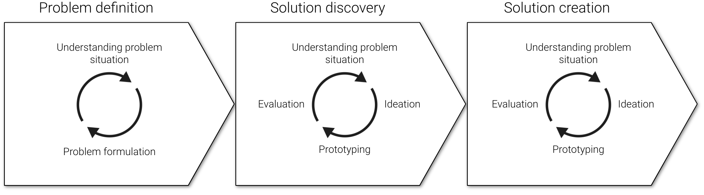

Designing the right solutions in the right way for the right problems
The toolkit is intended to support in planning and carrying out socio-technical and user-oriented design
and innovation projects with DHIS2. The toolkit offers a general iterative and problem-driven design process,
several methods, and examples. The approach is socio-technical as it emphasizes solutions that
integrates well with existing technology and social arrangements and that solutions may be both social and technical.
The process can be followed in its entirety, or the different methods can be consulted for support
in different activities of a project.
The design process starts with a problem, which may be redefined along
the project through iterations of establishing an understanding of the existing socio-technical system, developing ideas
for solutions, and prototyping and evaluating these until a solution is developed and implemented.
What kind of problems?
The approach is based on the traditions of socio-technical design and design thinking. It can be used to address various types of problems relevant to DHIS2 projects ranging from identifying the right intervention or thing to build, and through iterations, identifying how to best design it. Examples include:
- Improving the usability of a user interface
- Building better support for health workers by designing new tools
- Changing organizational arrangements and technology to improve work processes
From identifying the problem to discovering and creating a solution
The SDI approach promotes a process where the project, through iterations, moves from formulating the problem to be addressed, exploring possible solutions, and finally, when the right problem and an appropriate solution are defined, one further iterates to explore the right way to design the solution.
Examples of use
- Exploring how to better support the work of hospital store managers
- Improving the usability of a data entry screen
- Making DHIS2 more usable and relevant to low-level health managers